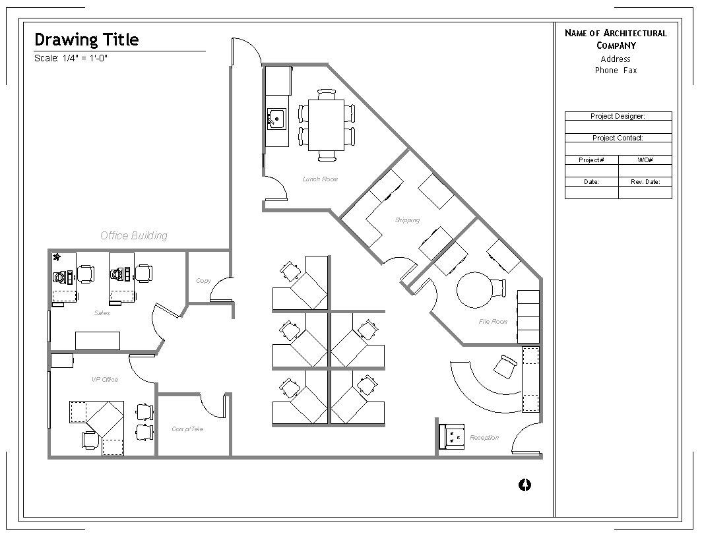

Acme Munitions has recently acquired a Railgun Realities, Inc. Since Acme's office is full, and no office space is immediately available to accomodate both sets of staff, a nearby office has been leased for the RRI. It is your job to ensure that the office space is properly allocated with network jacks. Acme's chief electrical engineer has been assigned to ensure that you have adequate power everywhere--all you will have to do is note on the floorplan and in your documentation how many power outlets you need in any given location.
Shipping and the file-room will need PCs, in addition to one at each other desk. The engineering team has requested that the copier in the copy room have an ethernet connection. RRI will require a file server, email and web server. Engineering has also requested an intranet web server. The company's five engineers (who sit in the center of the office) have requested gigabit ethernet connections to the fileserver.
Your plan will have to include the quantity of cabling, switches, jacks, racks, servers and patch cables. Be sure to mark the map clearly with locations of network jacks, since this will then be turned over to the company's wiring contractor to actually pull the cable. The CIO has also requested that you include pricing for each component--Acme Munition's sales have been down, and he is strongly considering having you run the cable yourself.
RRI's new location has a drop down ceiling, and cubes which have channels for both power and ethernet cable runs, but each cube has only two outlets integrated. You will likely need to budget for additional powerstrips.
No phone equipment has been run in this location. You will either need to run phone lines or run additional ethernet for Voice-over-IP
RRI will not have their own internet connection, but will be linked to Acme by a dedicated T-1.
